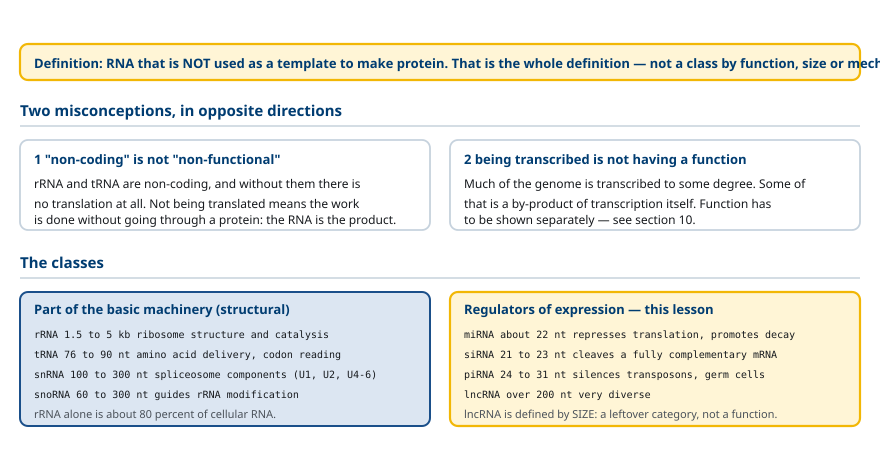
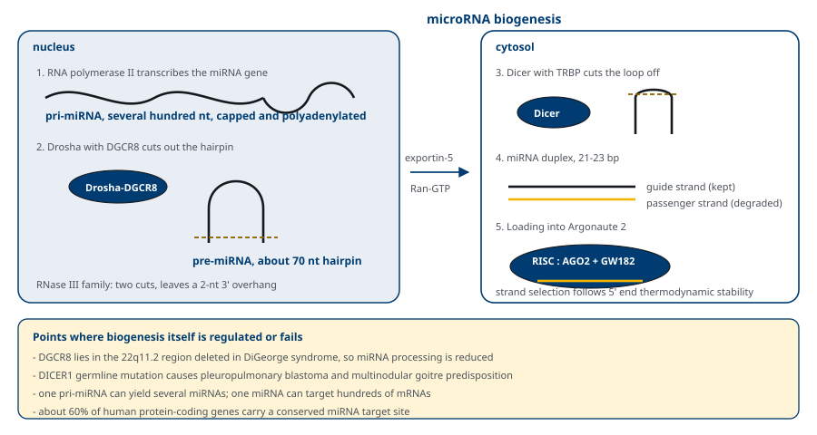
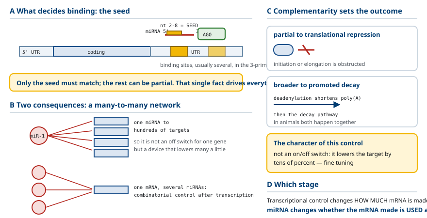
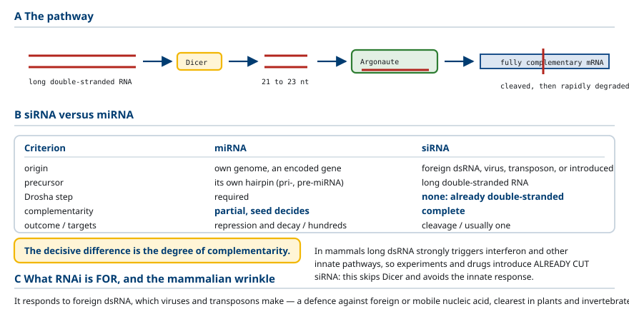
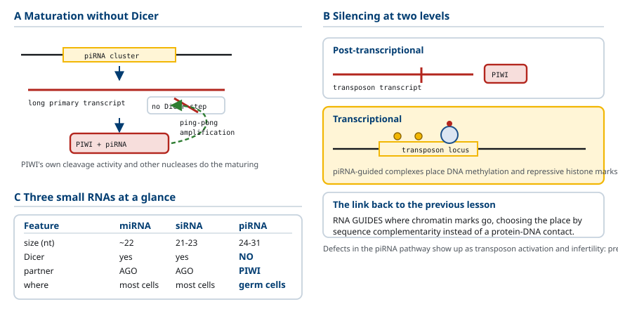
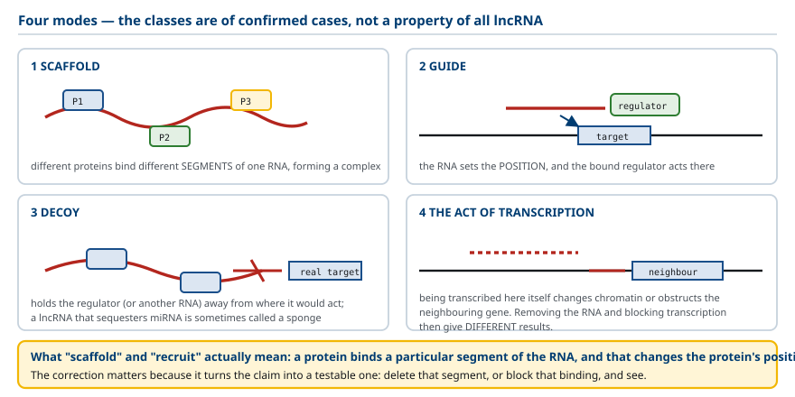
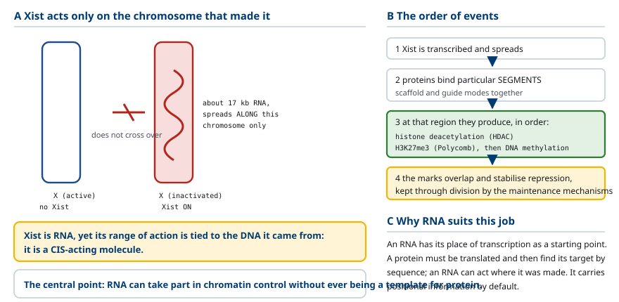
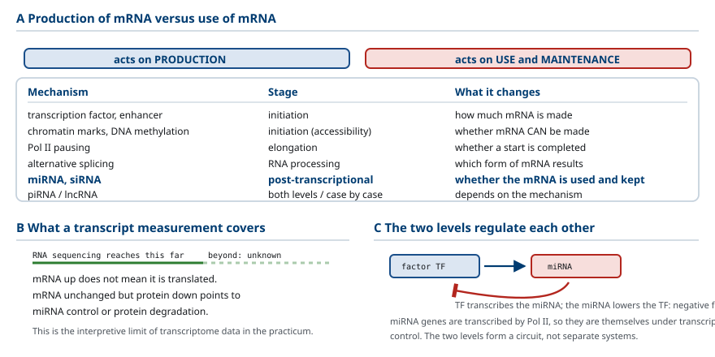
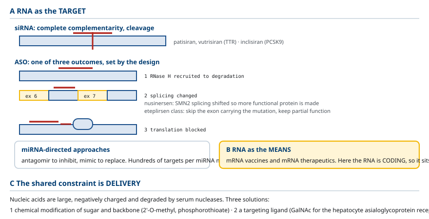
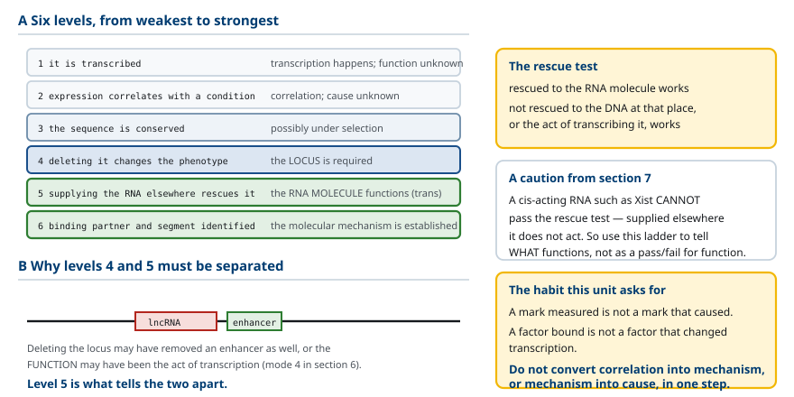

M03-W05-L02 · 분자유전학과 계통별 의학생화학특론
Non-coding RNA와 발현 조절
Non-coding RNA and the Control of Gene Expression
학습목표
- 비암호화 RNA를 정의하고 '단백질을 만들지 않는 RNA'와 '기능이 없는 RNA'를 구분한다.
- 주요 비암호화 RNA를 크기와 기능으로 분류하고 각 부류의 대표 사례를 든다.
- miRNA의 생성 경로를 Drosha와 Dicer의 작용 위치로 나누어 설명한다.
- miRNA의 표적 인식 조건을 seed 서열로 설명하고 하나의 miRNA가 여러 표적을 가지는 이유를 쓴다.
- miRNA와 siRNA를 기원·상보성 정도·작용 결과로 구분한다.
- RNA 간섭이 세포에서 원래 담당하는 방어 기능을 설명하고 piRNA의 역할과 연결한다.
- lncRNA의 작용 방식 네 가지를 구분하고 '골격'과 '모집'이라는 표현의 정확한 의미를 쓴다.
- Xist가 조절 분자로서 작동하는 방식을 설명하고 RNA가 번역 주형이 되지 않고도 조절에 참여할 수 있음을 쓴다.
- 전사 조절과 전사 이후 조절을 구분하고 miRNA 조절이 어느 쪽에 속하는지 지목한다.
- 비암호화 RNA를 표적 또는 수단으로 쓰는 치료 전략을 분류하고 각 전략의 작용 지점을 쓴다.
선수지식
- M03-W05-L01 후성유전 조절 — chromatin 표지, Polycomb, X 불활성화의 개요
- M03-W03-L01 Splicing 이상과 질환, RNA 안정성 조절 — mRNA 반감기, 분해 경로
- M03-W02-L02 RNA의 종류와 전사의 기전 — RNA polymerase I·II·III의 산물
강의 구성
- 1. 비암호화 RNA: 정의와 흔한 오해
- 2. miRNA의 생성: Drosha와 Dicer
- 3. miRNA의 표적 인식과 작용
- 4. siRNA와 RNA 간섭
- 5. piRNA와 전이인자 억제
- 6. lncRNA의 작용 방식
- 7. Xist: 조절 분자로서의 lncRNA
- 8. 전사 조절과 전사 이후 조절의 구분
- 9. 비암호화 RNA를 표적 또는 수단으로 쓰는 치료
- 10. 기능을 어떻게 확인하는가
1. 비암호화 RNA: 정의와 흔한 오해
비암호화 RNA(non-coding RNA, ncRNA) 는 단백질을 만드는 주형으로 쓰이지 않는 RNA다. 정의가 이것뿐이라는 점을 분명히 해야 한다. 번역되지 않는다는 성질 하나로 묶은 범주이며, 기능이나 크기나 기전으로 묶은 범주가 아니다.
여기서 바로잡아야 할 오해가 두 개 있다.
오해 1: '비암호화'와 '기능 없음'은 같은 말이 아니다. rRNA와 tRNA는 오래전부터 알려진 비암호화 RNA이고, 둘 없이는 번역 자체가 불가능하다. 번역되지 않는다는 것은 그 RNA가 하는 일이 단백질을 통하지 않는다는 뜻이다. RNA 자체가 산물이다.
오해 2: 전사되는 모든 비암호화 영역이 기능을 가진다는 뜻도 아니다. 사람 유전체의 상당 부분이 전사되지만, 전사된다는 사실만으로 그 RNA에 기능이 있다고 결론할 수 없다. 전사의 부산물이거나 전사 과정 자체의 결과일 수 있다. 10절에서 이 판정 문제를 따로 다룬다.
두 오해를 함께 피하면 올바른 태도가 나온다. 비암호화 RNA 각각에 대해 기능이 있는지, 어떤 기전으로 작동하는지를 따로 확인해야 한다.
주요 비암호화 RNA를 크기와 기능으로 분류하면 다음과 같다.
| 부류 | 크기 | 주된 기능 | 비고 |
|---|---|---|---|
| rRNA | 1.5~5 kb | ribosome의 구조와 촉매 | 세포 RNA의 약 80% |
| tRNA | 약 76~90 염기 | 아미노산 운반과 codon 해독 | — |
| snRNA | 약 100~300 염기 | spliceosome의 구성 | U1, U2, U4, U5, U6 |
| snoRNA | 약 60~300 염기 | rRNA의 수식 안내 | 핵소체에 있다 |
| miRNA | 약 22 염기 | 표적 mRNA의 번역 억제와 분해 | 이 수업의 2~3절 |
| siRNA | 약 21~23 염기 | 상보적 mRNA의 절단 | 이 수업의 4절 |
| piRNA | 약 24~31 염기 | 전이인자 억제, 생식세포 | 이 수업의 5절 |
| lncRNA | 200 염기 이상 | 매우 다양하다 | 이 수업의 6~7절 |
이 표에서 두 가지를 읽어야 한다. 첫째, rRNA·tRNA·snRNA·snoRNA는 세포의 기본 기계에 속하는 구조적 요소다. 둘째, miRNA·siRNA·piRNA·lncRNA는 발현을 조절하는 요소이며, 이 수업의 주제는 두 번째 집단이다.
마지막으로 분류의 한계를 짚어 둔다. lncRNA는 '200 염기 이상의 비암호화 RNA'라는 크기 기준으로 정의된 범주이며, 그 안의 분자들이 공통된 기전을 공유하지 않는다. 기능으로 묶인 범주가 아니라 나머지를 모아 놓은 범주에 가깝다. 따라서 'lncRNA는 무엇을 한다'는 문장은 성립하지 않는다.

2. miRNA의 생성: Drosha와 Dicer
miRNA(microRNA) 는 약 22 염기의 짧은 RNA이며, 사람에서 2,000종 이상이 알려져 있다. 생성 과정이 여러 단계를 거치고 단계마다 담당 효소가 다르므로, 어느 효소가 어디에서 무엇을 자르는지를 축으로 정리해야 한다.
경로는 다음과 같다.
1. 전사(핵): RNA polymerase II가 miRNA 유전자를 전사해 긴 1차 전사체를 만든다. 이것을 pri-miRNA라 한다. 자체 머리핀 구조를 가지며, 하나의 pri-miRNA에 여러 개의 머리핀이 들어 있을 수도 있다. 자신의 유전자에서 전사되기도 하고 다른 유전자의 intron에서 나오기도 한다. 2. 1차 절단(핵): Drosha가 DGCR8과 함께 머리핀의 밑동을 잘라 약 70 염기의 머리핀을 떼어낸다. 이것이 pre-miRNA다. 3. 수송: Exportin-5가 pre-miRNA를 세포질로 내보낸다. 4. 2차 절단(세포질): Dicer가 머리핀의 고리 부분을 잘라 약 22 염기의 이중나선 조각을 만든다. 5. 적재: 두 가닥 가운데 하나가 Argonaute 단백질에 실리고, 나머지 가닥은 버려진다. 실린 가닥을 유도 가닥(guide strand)이라 한다. Argonaute와 miRNA가 이룬 복합체를 RISC(RNA-induced silencing complex) 라 한다.
여기서 기억할 분업이 분명하다. Drosha는 핵에서 밑동을, Dicer는 세포질에서 고리를 자른다. 두 효소가 모두 이중나선 RNA를 인식하는 RNase III 계열이지만 작용 위치와 자르는 부위가 다르다.
적재 단계에서 어느 가닥이 선택되는지는 무작위가 아니다. 두 가닥 가운데 5′ 말단의 결합이 더 약한 쪽이 유도 가닥으로 선택되는 경향이 있다. 다만 조직에 따라 다른 가닥이 선택되는 경우도 있어, 하나의 pre-miRNA에서 두 종류의 기능적 miRNA가 나올 수 있다.

3. miRNA의 표적 인식과 작용
RISC에 실린 miRNA는 상보적인 서열을 가진 표적 mRNA를 찾아 결합한다. 결합의 조건과 결과를 정확히 알아야 한다.
인식 조건: seed 서열. 동물의 miRNA는 표적과 전체 길이에 걸쳐 완전히 상보적이지 않다. 결합을 결정하는 것은 miRNA의 5′ 쪽 2~8번 염기이며, 이 구간을 seed 서열이라 한다. Seed가 표적과 상보적으로 맞으면 결합이 성립하고, 나머지 구간의 상보성은 부분적이어도 된다.
결합 부위는 주로 표적 mRNA의 3′ 비번역 영역(3′ UTR) 에 있다. 하나의 mRNA 3′ UTR에 여러 miRNA의 결합 부위가 있을 수 있고, 같은 miRNA의 부위가 여러 개 있기도 하다.
Seed 서열 조건에서 두 가지 중요한 귀결이 나온다.
귀결 1: 하나의 miRNA가 수백 개의 표적을 가진다. 7개 염기의 상보성만 요구하므로 그 서열을 3′ UTR에 가진 mRNA가 유전체에 많이 있다. 따라서 miRNA 하나는 특정 유전자 하나를 끄는 장치가 아니라 여러 유전자의 양을 함께 조금씩 낮추는 장치다.
귀결 2: 하나의 mRNA가 여러 miRNA의 조절을 받는다. 앞 수업의 조합 조절이 전사 이후 단계에서도 나타나는 것이다.
작용의 결과는 두 가지이고, 상보성의 정도가 어느 쪽이 우세할지를 정한다.
- 번역 억제: 부분적 상보성일 때 우세하다. Ribosome의 개시나 신장을 방해한다.
- mRNA 분해 촉진: 상보성이 넓을 때 우세하다. Deadenylation을 유도해 poly(A) 꼬리를 짧게 만들고 분해 경로로 보낸다.
동물에서는 번역 억제와 분해 촉진이 함께 일어나며, 전체 억제 효과의 상당 부분이 mRNA 양의 감소로 설명된다는 측정 결과가 있다.
조절의 성질을 다른 기전과 비교해 두어야 한다. miRNA 조절은 유전자를 완전히 끄는 스위치가 아니다. 표적의 양을 수십 퍼센트 수준으로 낮추는 미세 조정이 전형적이다. 이 성질이 쓸모가 있는 상황은 두 가지다. 첫째, 발현량의 잡음을 줄여 안정화한다. 둘째, 세포가 상태를 전환할 때 이전 상태의 전사체를 빠르게 치운다.
마지막으로 이 수업의 틀에서 miRNA의 자리를 확정해야 한다. miRNA는 전사 조절이 아니다. 전사가 같은 양으로 일어나도 mRNA의 수명과 번역이 바뀌면 단백질 양이 달라진다. 앞 수업들이 다룬 mRNA의 생산 단계와 달리, miRNA는 생산된 mRNA의 이용과 유지에 작용한다.

4. siRNA와 RNA 간섭
siRNA(small interfering RNA) 는 miRNA와 크기가 비슷하고 Dicer와 Argonaute를 공유하지만, 기원과 작동 방식이 다르다. 두 분자를 구분하는 것이 이 절의 목표다.
RNA 간섭(RNA interference, RNAi) 은 이중나선 RNA가 그것과 상보적인 서열을 가진 mRNA의 발현을 억제하는 현상이다. 1990년대에 식물과 선충에서 발견되었고, 2006년 노벨 생리의학상의 주제가 되었다.
기전은 다음과 같다. 세포질에 긴 이중나선 RNA가 들어오면 Dicer가 이를 약 21~23 염기의 조각으로 자른다. 조각의 한 가닥이 Argonaute에 실려 RISC를 이루고, 완전히 상보적인 mRNA를 찾아 결합한다. 완전 상보성에서는 Argonaute의 절단 활성이 작동해 mRNA를 그 자리에서 자른다. 잘린 mRNA는 빠르게 분해된다.
miRNA와 siRNA의 차이는 그림의 비교표로 정리한다. 여기서 가장 중요한 차이는 상보성의 정도다. 그것이 표적 수와 작용 결과를 함께 결정한다. 부분 상보성은 여러 표적에 약하게, 완전 상보성은 하나의 표적에 강하게 작용한다.
RNAi가 세포에서 원래 담당하는 기능은 무엇인가. 이 체계가 외래 이중나선 RNA에 반응한다는 사실이 답을 가리킨다. 많은 바이러스가 복제 과정에서 이중나선 RNA를 만들고, 전이인자도 이중나선 중간체를 만든다. 즉 RNAi는 외래 또는 이동성 핵산에 대한 방어 체계로 이해된다. 식물과 무척추동물에서 이 방어 기능이 특히 뚜렷하다.
사람과 다른 포유류에서는 사정이 조금 다르다. 긴 이중나선 RNA는 interferon 반응을 비롯한 선천 면역 경로를 강하게 활성화하므로, 포유류 세포에서는 바이러스 방어를 주로 단백질 기반 선천 면역이 담당한다. 그래서 실험과 치료에서는 긴 이중나선 RNA 대신 이미 21~23 염기로 잘린 siRNA를 직접 넣는다. 그러면 Dicer 단계를 건너뛰고 선천 면역 활성화도 피할 수 있다.

5. piRNA와 전이인자 억제
piRNA(PIWI-interacting RNA) 는 약 24~31 염기의 비암호화 RNA이며, 주로 생식세포에서 작동한다. Argonaute 계열 가운데 PIWI 하위 계열 단백질과 짝을 이룬다.
생성 경로가 miRNA·siRNA와 다르다. Dicer를 쓰지 않는다. 긴 1차 전사체가 특정 유전체 구역(piRNA cluster)에서 전사되고, PIWI 단백질 자신의 절단 활성과 다른 nuclease들이 관여하는 경로로 성숙한다. 그 과정에 증폭 고리(ping-pong cycle)가 포함되어 표적에 대응하는 piRNA가 늘어난다.
기능은 전이인자(transposable element)의 억제다. 전이인자는 유전체 안에서 자리를 옮기거나 사본을 늘리는 서열이며, 사람 유전체의 상당 부분을 차지한다. 이것이 생식세포에서 활성화되면 삽입 변이가 다음 세대로 전달되므로 반드시 막아야 한다.
piRNA가 억제를 수행하는 방식은 두 층위다.
- 전사 이후: 전이인자에서 나온 전사체를 PIWI가 절단한다.
- 전사 수준: piRNA가 유도한 복합체가 해당 유전체 구역에 DNA methylation과 억제성 histone 표지를 만든다.
두 번째 층위가 앞 수업과 연결되는 지점이다. RNA가 chromatin 표지의 배치를 안내한다. 어디에 표지를 놓을지를 서열 상보성으로 정하는 것이며, 서열 특이적 전사인자가 단백질–DNA 접촉으로 위치를 정하는 것과는 다른 방식이다.
piRNA 경로의 결함은 생식세포에서 전이인자 활성화와 불임으로 나타난다. 이 기능이 생식세포에 집중되어 있다는 사실은 유전체의 안정성을 세대 간에 보존하는 일이 체세포의 조절과 분리된 과제임을 보여 준다.

6. lncRNA의 작용 방식
lncRNA(long non-coding RNA) 는 200 염기 이상의 비암호화 RNA이며, 1절에서 말한 대로 크기로 정의된 범주다. 기전을 공유하지 않으므로 '어떻게 작동하는가'를 하나의 답으로 쓸 수 없다. 대신 지금까지 확인된 작용 방식을 네 가지로 분류한다.
방식 1: 발판(scaffold). 여러 단백질이 하나의 RNA 분자의 서로 다른 구간에 결합해 복합체를 이룬다. RNA가 구성 요소들을 한자리에 모으는 구조적 역할을 한다.
방식 2: 안내(guide). RNA가 특정 유전체 구역과 상보적 결합이나 다른 상호작용으로 결합하고, 거기에 결합한 조절 단백질이 그 위치에서 작용하게 한다. 5절의 piRNA가 하는 일과 같은 범주다.
방식 3: 유인(decoy). RNA가 조절 단백질이나 다른 RNA를 붙잡아 그것이 본래의 표적에 작용하지 못하게 한다. miRNA를 붙잡는 lncRNA를 miRNA sponge라 부르기도 한다.
방식 4: 전사 자체의 효과. 그 구역이 전사된다는 사실 자체가 chromatin 상태를 바꾸거나 인접 유전자의 전사를 방해한다. 이 경우 RNA 산물이 아니라 전사 행위가 기능이다. 따라서 RNA를 없애는 실험과 전사를 막는 실험의 결과가 다르게 나온다.
여기서 용어 사용을 교정해야 한다. lncRNA를 설명할 때 '골격'이나 '모집'이라는 표현이 자주 쓰이는데, 그 말의 실제 의미는 다음과 같다.
이 교정이 중요한 이유는 검증 가능한 주장으로 바꾸어 주기 때문이다. '골격 역할을 한다'는 서술로는 무엇을 확인해야 하는지 알 수 없다. '이 RNA의 X 구간이 단백질 Y와 결합한다'로 바꾸면 그 구간을 없애거나 결합을 막아 확인할 수 있다.
마지막으로 단서를 붙인다. 모든 lncRNA의 기능이 같지 않고, 기능이 확인된 lncRNA는 전체의 일부다. 네 가지 방식은 확인된 사례를 정리한 분류이며, 어떤 lncRNA가 그 가운데 어느 방식으로 작동하는지는 각각 밝혀야 한다.

7. Xist: 조절 분자로서의 lncRNA
Xist는 lncRNA의 작용을 가장 잘 보여 주는 사례다. 앞 수업에서 X 염색체 불활성화라는 현상과 그 유지 기전을 다루었으므로, 이 절에서는 Xist가 조절 분자로서 어떻게 작동하는지에 집중한다.
Xist의 성질은 다음과 같다.
- 약 17 kb의 긴 RNA이며 단백질을 암호화하지 않는다.
- 불활성화될 X 염색체에서 발현된다. 활성 X에서는 발현되지 않는다.
- 발현된 Xist는 자신이 전사된 그 염색체를 따라 퍼진다. 핵 안에서 다른 염색체로 흩어지지 않고 같은 염색체에 머문다.
마지막 성질이 기전의 핵심이다. 조절 작용이 자신이 만들어진 자리에 국한되므로, 두 X 염색체 가운데 Xist를 발현하는 쪽만 억제된다. 앞 수업의 용어로 말하면 Xist는 cis로 작용하는 RNA다. 서열이 아니라 RNA이면서도 작용 범위가 자신이 나온 DNA에 묶여 있다.
작용 순서는 다음과 같다.
1. Xist가 전사되어 그 염색체를 따라 퍼진다. 2. Xist의 특정 구간에 조절 단백질들이 결합한다. 6절의 발판과 안내 방식이 함께 쓰인다. 3. 결합한 단백질들이 그 염색체 영역에서 작용해 histone 탈acetylation(HDAC 복합체), Polycomb 관련 표지(H3K27me3), 그리고 뒤이어 DNA methylation을 만든다. 4. 이 표지들이 겹쳐 억제 상태를 안정화하고, 앞 수업의 유지 기전으로 분열 뒤에도 이어진다.
여기서 이 수업의 중심 논점이 나온다.
RNA가 이 일에 적합한 이유도 생각해 볼 만하다. RNA는 자신이 전사된 위치를 출발점으로 가진다. 단백질은 번역된 뒤 핵으로 돌아와 서열로 표적을 찾아야 하지만, RNA는 만들어진 자리에서 바로 작용할 수 있다. 위치 정보를 기본으로 갖춘 조절 분자인 것이다.

8. 전사 조절과 전사 이후 조절의 구분
이 수업에서 다룬 비암호화 RNA들의 자리를 앞 수업들과 함께 정리해야 한다. 기준은 mRNA의 생산에 작용하는가, 생산된 mRNA의 이용에 작용하는가다.
이 구분이 실무에서 중요한 이유가 있다. 전사체 양을 측정한 결과로 단백질 양을 추론할 수 없다. RNA 염기서열 분석으로 mRNA가 늘었다는 것을 확인했어도, 그 mRNA가 번역되는지는 별개의 문제다. 반대로 mRNA 양이 그대로인데 단백질이 줄었다면 miRNA 조절이나 단백질 분해를 의심해야 한다.
실습 수업에서 다룰 전사체 분석의 해석상 한계가 여기에 있다. 전사체 자료는 mRNA의 생산 단계까지만 알려 준다.
비암호화 RNA 자체의 발현도 조절된다는 점도 짚어야 한다. miRNA 유전자는 Pol II가 전사하므로 전사인자와 chromatin 상태의 조절을 받는다. 즉 전사 조절이 전사 이후 조절의 도구를 만들어 내는 구조다. 두 층위가 분리된 체계가 아니라 서로를 조절하는 회로를 이룬다.
이 회로의 흔한 형태가 되먹임이다. 어떤 전사인자가 자신을 억제하는 miRNA의 전사를 켜면 음성 되먹임이 되고, 반대 배치는 양성 되먹임이 된다. 이런 회로가 발현량의 안정화와 상태 전환에 쓰인다.

9. 비암호화 RNA를 표적 또는 수단으로 쓰는 치료
RNA를 다루는 치료는 두 방향으로 나뉜다. RNA를 표적으로 삼는 것과 RNA를 수단으로 쓰는 것이다.
방향 1: 표적으로서의 RNA. 질환을 일으키는 단백질의 mRNA를 줄이거나 그 가공을 바꾼다.
- siRNA 약물: 4절에서 다루었다. 완전 상보성으로 표적 mRNA를 절단한다. Patisiran, inclisiran 등.
- 안티센스 oligonucleotide(ASO): 단일가닥 짧은 핵산이며 표적 mRNA와 염기쌍을 이룬다. 결과는 설계에 따라 달라진다. 분해를 유도하거나(RNase H를 불러온다), splicing을 바꾸거나, 번역을 막는다.
- Nusinersen은 척수근육위축에서 SMN2 유전자의 splicing을 바꾸어 기능적 단백질이 더 만들어지게 한다. 유전자를 끄는 것이 아니라 가공 방향을 바꾸는 전략이다.
- Eteplirsen 계열은 Duchenne 근육위축에서 변이를 포함한 exon을 건너뛰게 해 짧지만 기능이 일부 남은 단백질이 만들어지게 한다.
- miRNA를 겨냥한 접근: 과도한 miRNA를 억제하는 antagomir, 부족한 miRNA를 보충하는 mimic이 연구되고 있다. 하나의 miRNA가 수백 표적을 가진다는 3절의 성질 때문에 표적 외 작용이 큰 제약이 된다.
방향 2: 수단으로서의 RNA. RNA 자체를 투여해 세포가 원하는 단백질을 만들게 한다. mRNA 백신과 mRNA 치료제가 여기 속하며, 이 경우 RNA는 암호화 RNA이므로 이 수업의 범주와 구분된다.
두 방향의 공통된 제약이 전달이다. 핵산은 크고 음전하를 띠며 혈중 nuclease에 분해되므로, 표적 세포의 세포질에 도달시키는 일이 가장 어렵다. 해결 방식은 세 가지다.
1. 화학적 수식: 당과 인산 골격을 바꿔 분해에 대한 저항성을 높인다(2′-O-methyl, phosphorothioate 등). 2. 표적 리간드 결합: GalNAc를 붙이면 간세포의 asialoglycoprotein 수용체가 흡수한다. 간 표적 약물이 먼저 성공한 이유다. 3. 입자 포장: 지질 나노입자에 담아 세포막을 통과시킨다.

10. 기능을 어떻게 확인하는가
이 수업의 마지막 주제는 내용이 아니라 판정의 기준이다. 비암호화 RNA 분야는 새로운 분자가 빠르게 보고되는 영역이고, 보고된 기능의 근거 수준이 고르지 않다. 자료를 읽을 때 적용할 기준을 세워야 한다.
1절에서 말한 두 번째 오해로 돌아가자. 전사된다는 사실만으로 기능이 있다고 결론할 수 없다. 유전체의 많은 부분이 어느 정도 전사되며, 그 가운데는 전사 기계의 부정확성에서 나온 산물이나 다른 전사의 부산물이 있다.
기능을 주장하려면 어떤 증거가 필요한가. 확인의 수준을 낮은 것부터 높은 것으로 정리하면 다음과 같다.
| 수준 | 증거 | 결론할 수 있는 것 |
|---|---|---|
| 1 | 그 RNA가 전사된다 | 전사가 일어난다 (기능은 알 수 없다) |
| 2 | 발현이 조건이나 질환과 상관한다 | 상관이 있다 (원인인지는 알 수 없다) |
| 3 | 보존되어 있다 | 선택압을 받았을 가능성 |
| 4 | 그 RNA를 없애면 표현형이 바뀐다 | 그 유전자좌가 필요하다 |
| 5 | 다른 위치에서 그 RNA를 공급해 회복된다 | RNA 분자 자체가 기능한다 (trans 작용) |
| 6 | 결합 상대와 결합 구간이 확인된다 | 분자 기전이 확인된다 |
4와 5의 구분이 특히 중요하다. 어떤 lncRNA 유전자좌를 제거했을 때 표현형이 나타났다고 해서 그 RNA가 작용했다는 뜻은 아니다. 제거한 구역에 enhancer가 들어 있었을 수도 있고, 6절의 방식 4처럼 전사 행위 자체가 기능이었을 수도 있다. 이 가능성을 가르는 방법이 5다. RNA를 다른 위치에서 공급해 회복되면 RNA 분자의 기능이고, 회복되지 않으면 그 자리의 DNA나 전사 행위의 기능이다.
앞 수업의 cis·trans 구별이 여기서 다시 쓰인다는 점을 확인해야 한다. Xist처럼 cis로 작용하는 RNA는 5번 기준을 통과하지 못한다. 다른 위치에서 공급해도 작용하지 않기 때문이다. 따라서 이 기준은 '통과해야 기능이 있다'는 뜻이 아니라 무엇이 기능하는지를 가려내는 도구로 써야 한다.
실무적인 함의도 있다. 전사체 분석에서 어떤 lncRNA가 질환군에서 높게 나왔다는 결과는 수준 2에 해당한다. 유용한 출발점이지만, 그것만으로 치료 표적이나 진단 표지로 쓸 근거가 되지는 않는다.

확인 문항
비암호화 RNA의 정의를 쓰고 '비암호화'와 '기능 없음'을 구분해야 하는 이유를 설명하시오. 반대 방향의 오해도 함께 쓰시오.
해설
비암호화 RNA는 단백질을 만드는 주형으로 쓰이지 않는 RNA이며, 번역되지 않는다는 성질 하나로 묶은 범주다. rRNA와 tRNA가 없으면 번역 자체가 불가능하므로 번역되지 않는다는 것은 기능이 없다는 뜻이 아니라 그 RNA가 하는 일이 단백질을 통하지 않는다는 뜻이다. 반대 방향의 오해는 전사되는 모든 비암호화 영역이 기능을 가진다고 보는 것이다. 전사의 부산물일 수 있으므로 각각에 대해 기능과 기전을 따로 확인해야 한다.
lncRNA가 '기능으로 묶인 범주가 아니다'라는 말의 뜻을 설명하고, 그 결과 성립하지 않는 서술 형태를 쓰시오.
해설
lncRNA는 '200 염기 이상의 비암호화 RNA'라는 크기 기준으로 정의된 범주이며, 그 안의 분자들이 공통된 기전을 공유하지 않는다. 나머지를 모아 놓은 범주에 가깝다. 따라서 'lncRNA는 무엇을 한다'처럼 범주 전체에 하나의 기능을 돌리는 서술은 성립하지 않는다. 어떤 lncRNA가 어떤 방식으로 작동하는지는 각각 밝혀야 한다.
miRNA 생성에서 Drosha와 Dicer의 작용 위치와 자르는 부위를 구분하고, 적재 단계에서 어느 가닥이 선택되는지 쓰시오.
해설
Drosha는 DGCR8과 함께 핵에서 pri-miRNA 머리핀의 밑동을 잘라 약 70 염기의 pre-miRNA를 만든다. Dicer는 세포질에서 그 머리핀의 고리 부분을 잘라 약 22 염기의 이중나선 조각을 만든다. 두 효소 모두 이중나선 RNA를 인식하는 RNase III 계열이지만 작용 위치와 자르는 부위가 다르다. 적재에서는 두 가닥 가운데 5프라임 말단의 결합이 더 약한 쪽이 유도 가닥으로 선택되는 경향이 있으며, 조직에 따라 다른 가닥이 선택되어 하나의 pre-miRNA에서 두 종류의 기능적 miRNA가 나올 수도 있다.
miRNA의 seed 서열 조건을 쓰고 거기서 나오는 두 가지 귀결을 설명하시오.
해설
동물 miRNA는 표적과 전체 길이에 걸쳐 완전히 상보적이지 않고, 5프라임 쪽 2번에서 8번 염기인 seed 서열이 표적과 맞으면 결합이 성립한다. 결합 부위는 주로 표적 mRNA의 3프라임 비번역 영역에 있다. 귀결은 두 가지다. 첫째, 7염기 정도의 상보성만 요구하므로 하나의 miRNA가 수백 개의 표적을 가지며, 특정 유전자 하나를 끄는 장치가 아니라 여러 유전자의 양을 함께 조금씩 낮추는 장치가 된다. 둘째, 하나의 mRNA가 여러 miRNA의 조절을 받으므로 전사 이후 단계에서도 조합 조절이 나타난다.
miRNA 조절이 전사 조절과 다른 단계에 속한다는 것을 설명하고, 이 사실이 전사체 측정의 해석에 주는 함의를 쓰시오.
해설
miRNA는 전사가 같은 양으로 일어나도 생산된 mRNA의 수명과 번역을 바꾸어 단백질 양을 달라지게 한다. 전사 조절이 mRNA의 생산에 작용하는 것과 달리 miRNA는 생산된 mRNA의 이용과 유지에 작용한다. 따라서 전사체 양을 측정한 결과로 단백질 양을 추론할 수 없다. mRNA가 늘었어도 번역되는지는 별개이고, mRNA 양이 그대로인데 단백질이 줄었다면 miRNA 조절이나 단백질 분해를 의심해야 한다.
miRNA와 siRNA를 기원·Drosha 단계·상보성·작용 결과·표적 수로 구분하고, 가장 중요한 차이를 지목하시오.
해설
miRNA는 자신의 유전체에 암호화된 유전자에서 나오고 자체 머리핀을 전구체로 가지므로 Drosha 단계가 필요하며, 표적과 부분적으로 상보적이어서 번역 억제와 분해 촉진을 일으키고 표적이 수백 개다. siRNA는 외래 이중나선 RNA나 인위적 도입에서 나오고 이미 이중나선이므로 Drosha 단계가 없으며, 완전 상보적이어서 mRNA를 절단하고 표적이 보통 하나다. 가장 중요한 차이는 상보성의 정도이며, 그것이 표적 수와 작용 결과를 함께 결정한다.
lncRNA의 작용 방식 네 가지를 쓰고, '골격'과 '모집'이라는 표현의 정확한 의미를 설명하시오. 이 교정이 왜 중요한지도 쓰시오.
해설
네 방식은 여러 단백질이 한 RNA의 서로 다른 구간에 결합해 복합체를 이루는 발판, 특정 유전체 구역에 결합해 조절 단백질이 그 위치에서 작용하게 하는 안내, 조절 단백질이나 다른 RNA를 붙잡아 본래 표적에 작용하지 못하게 하는 유인, 그리고 RNA 산물이 아니라 전사 행위 자체가 기능인 경우다. '골격'과 '모집'의 정확한 의미는 RNA의 특정 부분에 단백질이 결합해 그 단백질의 위치와 상호작용이 달라진다는 것이며, 어디선가 불러오거나 추상적인 틀을 제공한다는 뜻이 아니다. 이 교정이 중요한 이유는 검증 가능한 주장으로 바꾸어 주기 때문이다. '이 RNA의 특정 구간이 단백질 Y와 결합한다'로 바꾸면 그 구간을 없애거나 결합을 막아 확인할 수 있다.
Xist가 두 X 염색체 가운데 한쪽만 억제할 수 있는 이유를 설명하고, 이 사례가 보여 주는 중심 논점을 쓰시오.
해설
Xist는 불활성화될 X에서만 발현되고, 발현된 뒤 자신이 전사된 그 염색체를 따라 퍼져 다른 염색체로 흩어지지 않는다. 조절 작용이 자신이 만들어진 자리에 국한되므로 Xist를 발현하는 쪽만 억제된다. 즉 Xist는 RNA이면서도 작용 범위가 자신이 나온 DNA에 묶인 cis 작용 분자다. 중심 논점은 RNA가 단백질 합성의 주형이 되지 않고도 chromatin 조절에 참여할 수 있다는 것이며, 조절 분자가 반드시 단백질일 필요는 없다는 뜻이다.
어떤 lncRNA 유전자좌를 제거했을 때 표현형이 나타났다는 결과만으로 그 RNA가 기능한다고 결론할 수 없는 이유를 쓰고, 두 가능성을 가르는 실험을 설명하시오.
해설
제거한 구역에 enhancer 같은 조절서열이 들어 있었을 수도 있고, RNA 산물이 아니라 그 구역이 전사되는 행위 자체가 기능이었을 수도 있다. 따라서 그 결과는 유전자좌가 필요하다는 것까지만 말해 준다. 두 가능성을 가르는 실험은 그 RNA를 다른 위치에서 공급해 표현형이 회복되는지 보는 것이다. 회복되면 RNA 분자 자체의 기능이고, 회복되지 않으면 그 자리의 DNA나 전사 행위의 기능이다. 다만 Xist처럼 cis로 작용하는 RNA는 이 회복 실험을 통과하지 못하므로, 이 기준은 통과 여부로 기능을 판정하는 도구가 아니라 무엇이 기능하는지를 가려내는 도구로 써야 한다.
참고문헌
- Ferrier DR. Lippincott Illustrated Reviews: Biochemistry. 8th ed. Wolters Kluwer; 2023. Chapter 33.
- Cooper GM. The Cell: A Molecular Approach. 9th ed. Oxford University Press; 2022. Chapters 6 and 7.
- Alberts B, Heald R, Johnson A, et al. Molecular Biology of the Cell. 7th ed. W. W. Norton; 2022. Chapter 7.
- Bartel DP. Metazoan microRNAs. Cell. 2018;173(1):20–51.
- Statello L, Guo CJ, Chen LL, Huarte M. Gene regulation by long non-coding RNAs and its biological functions. Nat Rev Mol Cell Biol. 2021;22(2):96–118.
- Ozata DM, Gainetdinov I, Zoch A, O'Carroll D, Zamore PD. PIWI-interacting RNAs: small RNAs with big functions. Nat Rev Genet. 2019;20(2):89–108.
- Setten RL, Rossi JJ, Han SP. The current state and future directions of RNAi-based therapeutics. Nat Rev Drug Discov. 2019;18(6):421–446.
- Kopp F, Mendell JT. Functional classification and experimental dissection of long noncoding RNAs. Cell. 2018;172(3):393–407.